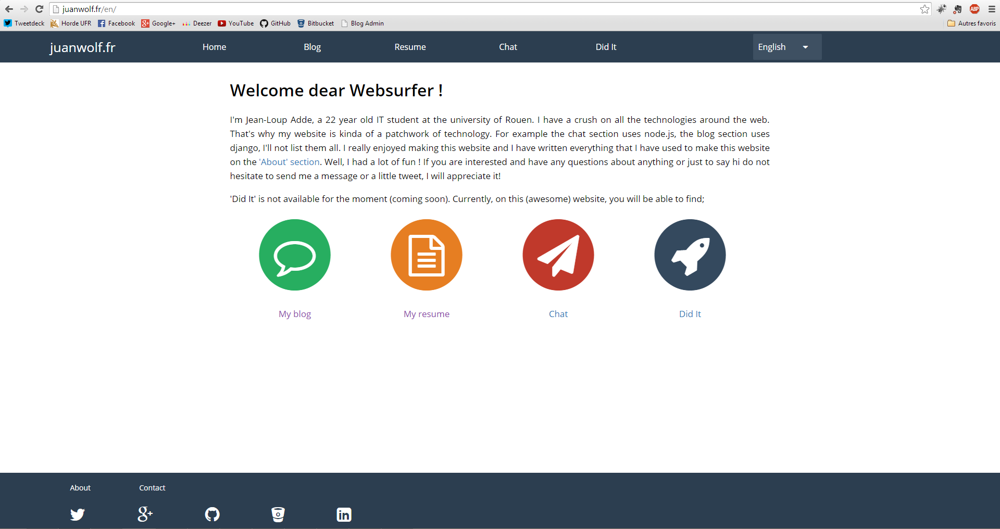
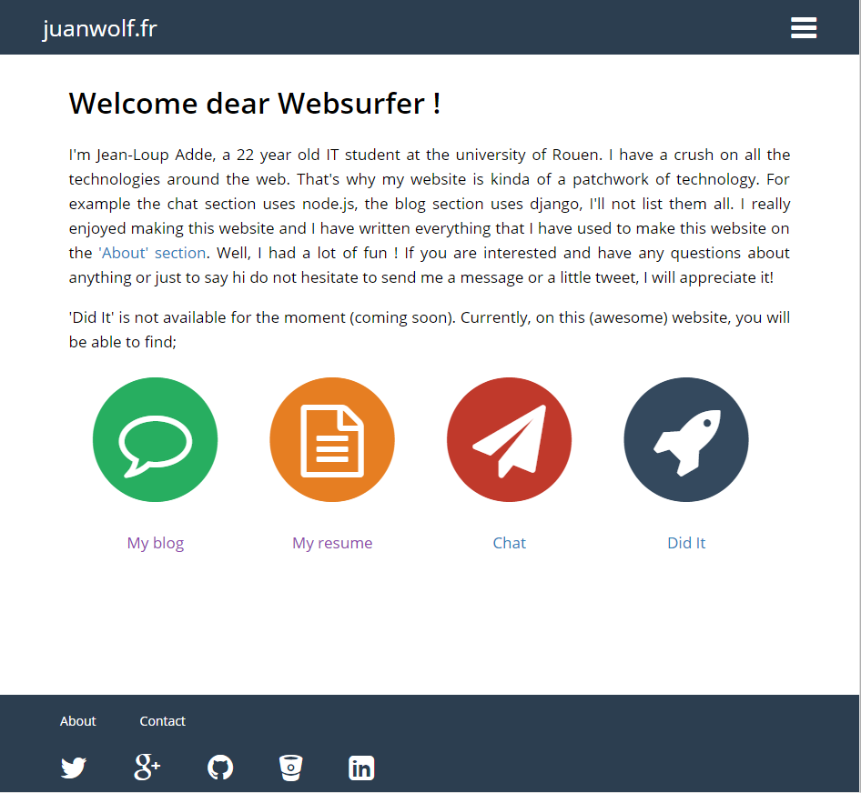
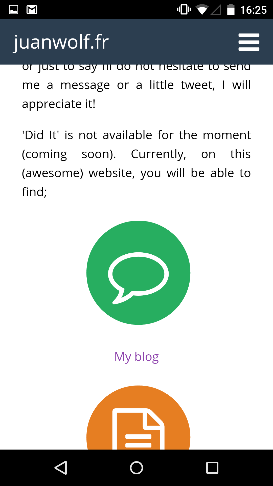
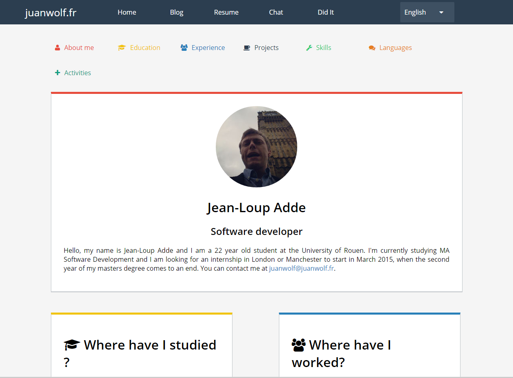
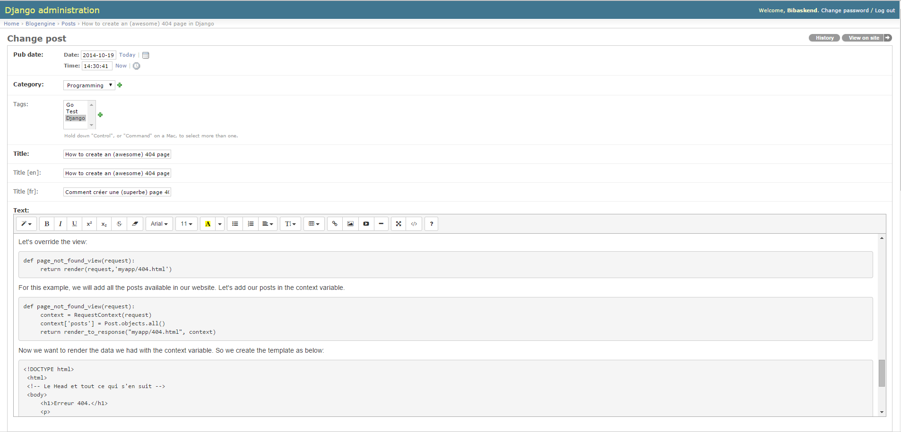
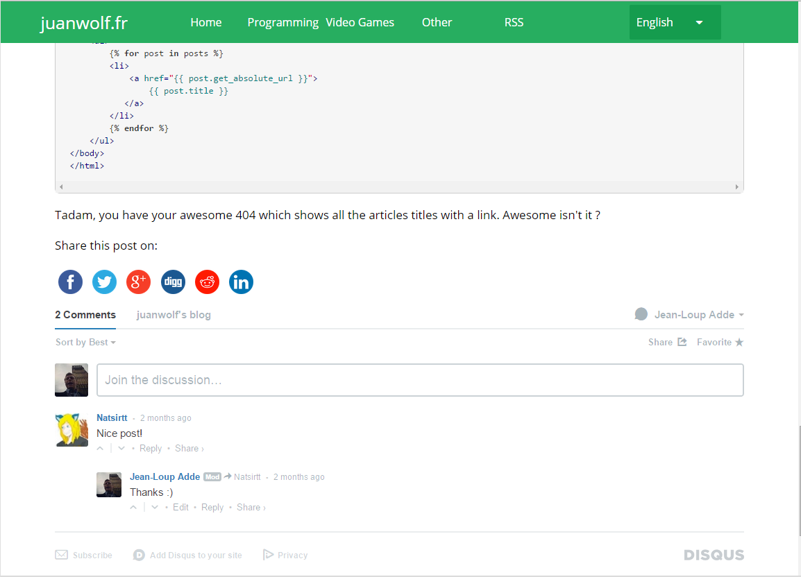
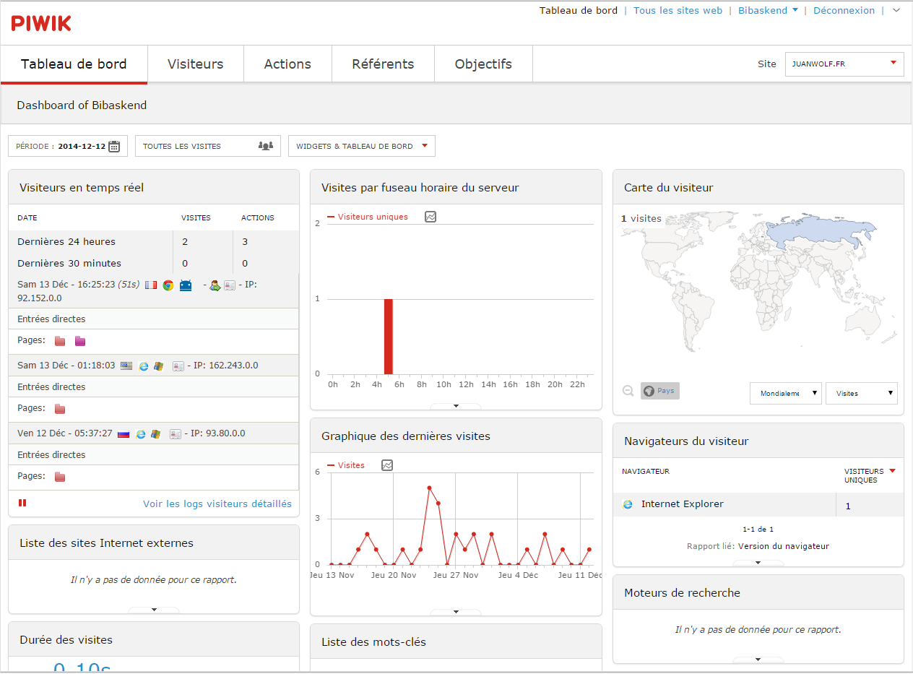
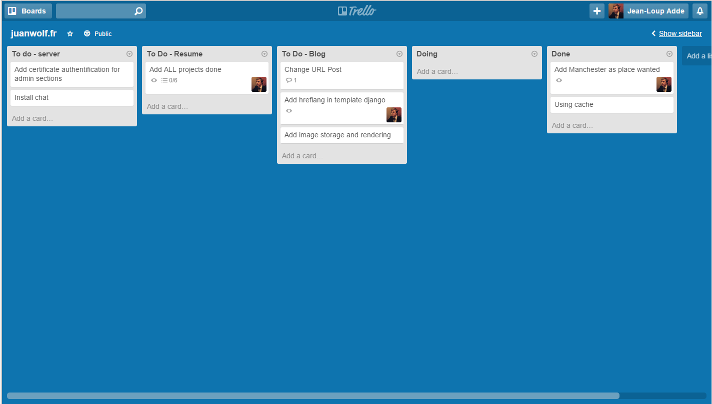
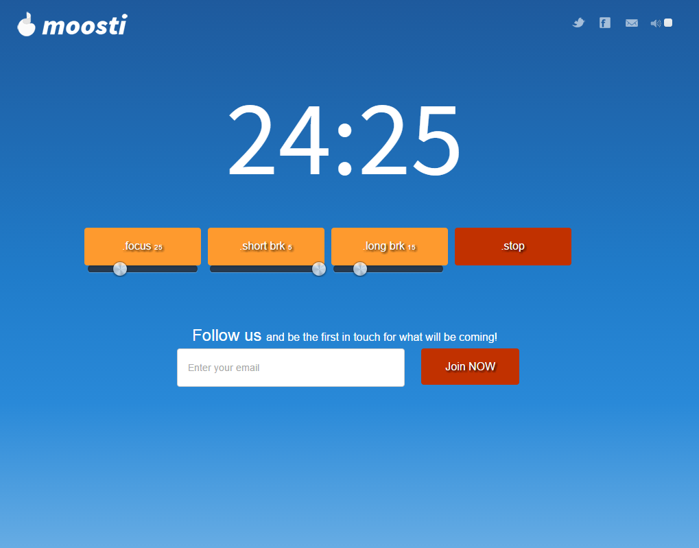

juanwolf.fr
Index
- Why ?
- Static Files
- Blog
- Analysis
- Management
- Conclusion
Why ?
- International visibility on the web
- Want to share experiences and point of view
- Technical challenge
Static files
- Create template for the website using HTML5, CSS3 (SASS)
- Create the look and feel of the website
- Mobile first approach
Home Page
Home Page - Tablet
Home Page - mobile
Home Page - mobile
Resume
Problem
- How to manage the internationalization of static files ?!
- How to detect user language ?
- How to redirect him perfectly knowing the precedent point ?
Solution
- W3C has the solution :
"For a first contact, using the Accept-Language value to infer regional settings may be a good starting point, but be sure to allow them to change the language as needed and specify their cultural settings more exactly if necessary. Store the results in a database or a cookie for later visits."
Solution
- Creation of a new proxy using Go which :
- Read the cookie (if there's one) to extract the language
- if not : detect Accept-Language in HTTP header
- If the desired language is available, the website will redirect the user to the appropriate version (english if not)
- Create a cookie if the user changed the language
Blog
Django (The web framework for perfectionist with deadlines)
- Using Python 3
- Elegant URL design
- Automatic Admin interface
- Easy to internationalize
- Using PostgreSQL for the persistence
Administration
Post
Chat
- Easier to communicate for technical problems
- Real time
- Using node.js
Client - Chat
Administration - Chat
Analytics - Piwik
Management - Trello / Kanban
Management - Pomodoro
Conclusion
- First big personal project
- Using node.js, go, python, sass, git, html5, js
- Some features to add
- Install the Chat (again)
- Develop traffic